기능을 더할수록 느려지는 이유
영상은 AI 에이전트로 앱을 만들 때 누구나 겪는 장면으로 시작해요. 원하는 걸 적으면 프런트엔드, 백엔드, 데이터베이스까지 금방 나와요. 그런데 자세히 보면 요청과 결과가 딱 맞지 않아요.
왼쪽은 요청한 기능이고 오른쪽은 AI가 덧붙인 기능이에요. 왼쪽 아래 'export to csv'와 'email digest'에는 'MISSING' 표시가 붙었고, 오른쪽엔 테마 전환, 인증 공급자, 분석 기능처럼 시키지 않은 것이 들어 있어요.
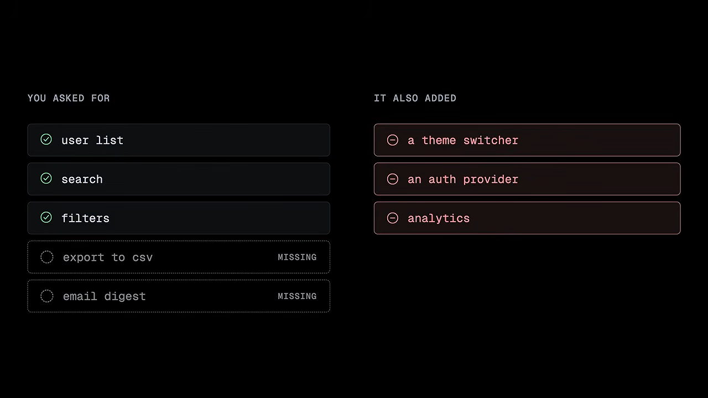
고치러 들어가면 하나를 고칠 때 다른 데가 조용히 깨져요. 다시 설명하고, 다시 고치고, 다시 테스트하는 동안 시간과 토큰만 나가요. 겨우 출시하고 다음 기능을 시키면 AI는 이미 있는 컴포넌트를 쓰지 않고 같은 로직을 세 번째로 새로 짜요. 앱은 느려지고, 멀쩡하던 기능이 새 기능 때문에 가끔 깨져요.
영상은 이 현상을 '부패(decay)'라고 불러요. 아래 그래프의 점선은 기능이 쌓일수록 빨라지는 복리(compounding) 곡선이고, 분홍 실선은 실제로 겪는 부패 곡선이에요. 가로축은 추가한 기능 수, 세로축은 출시 속도예요.
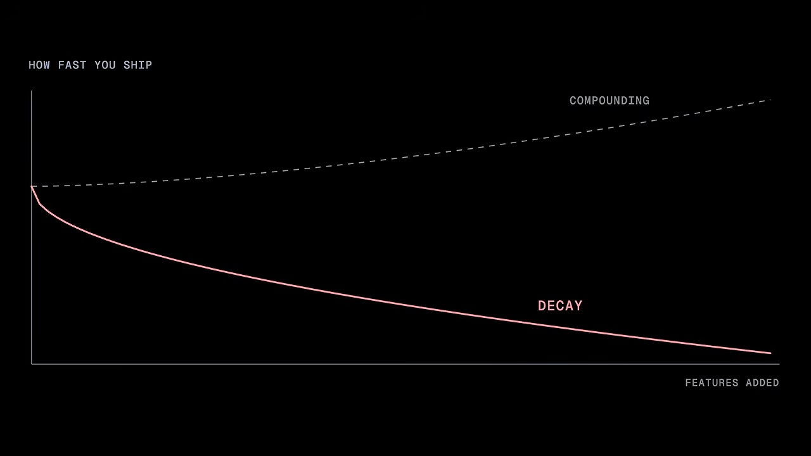
왜 이렇게 될까요. 바로 다음 화면이 원인 세 가지를 나란히 보여 줘요. 에이전트가 기억하는 계획이 없고(No plan it remembers), 결정의 기록이 없고(No record of decisions), 이미 있는 걸 다시 쓰게 하는 장치가 없어요(Nothing reusing what exists).
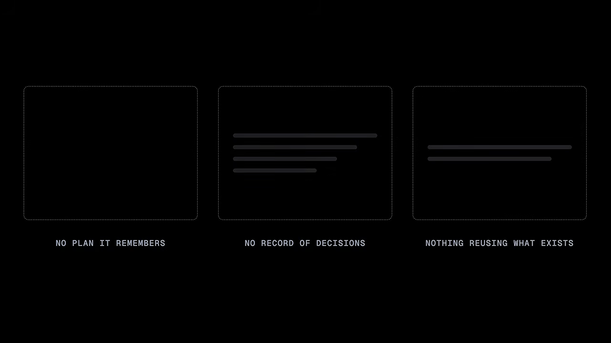
그래서 화자는 이 문제를 더 좋은 프롬프트로는 못 고친다고 잘라 말해요. 엔지니어링 문제라는 거예요. 영상은 이어서 첫 프롬프트부터 열 번째 기능까지 에이전트 밑에 엔지니어링 흐름을 깔면 무엇이 달라지는지 보여 줘요. 새 프로젝트뿐 아니라 남이 짠 코드에서도요.
영상에 나오는 스킬은 모두 아홉 개예요. 아래 그림은 영상이 단계별로 소개한 순서대로 묶어 본 거예요. 이후 섹션은 이 그림의 왼쪽부터 차례로 따라가요.
계획부터 세워요 — scope
앞에서 본 악순환은 대부분 한 가지에서 시작해요. AI에게 계획을 준 게 아니라 '바람'을 줬다는 거예요. 아래 화면 왼쪽의 "just make me a nice dashboard for my users"가 바람이고, 오른쪽 네 줄이 계획이에요. 첫 버전 범위, 범위 밖인 것, 만드는 순서, 그리고 무엇이 되면 끝인지예요.
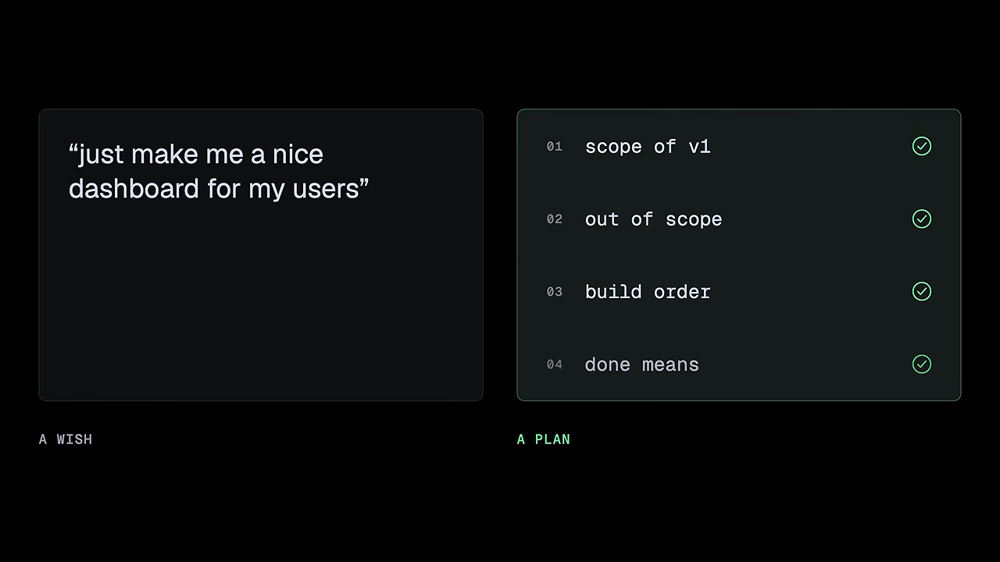
화자는 이게 수십 년 전에 이미 풀린 문제라고 말해요. 제대로 된 팀은 에디터부터 열지 않고, 무엇을 만들지와 첫 버전에 무엇이 들어가고 빠지는지부터 정해요. 이유는 단순해요. 계획에서 한 줄 바꾸는 건 공짜지만, 코드 곳곳에 퍼진 결정을 바꾸는 건 다시 짜는 일이에요. AI로 개발하기 시작하면서 이 단계를 슬쩍 건너뛰었을 뿐이에요.
scope는 먼저 질문해요
scope 스킬은 아이디어를 받으면 바로 코드를 짜지 않고 인터뷰를 해요. 누구를 위한 건지, 첫 버전에 뭘 넣고 뭘 미룰지, 무엇이 무엇에 기대는지를 물어요. 데모는 팀 이슈 트래커를 만드는 예제예요. 화면에서는 '첫 빌드에 넣을 것'을 고르라며 이슈 활동 기록과 관리자 화면에 추천 표시를 붙이고, 공개 API(Application Programming Interface)나 채팅 연동은 나중으로 미뤄도 된다고 설명해요.
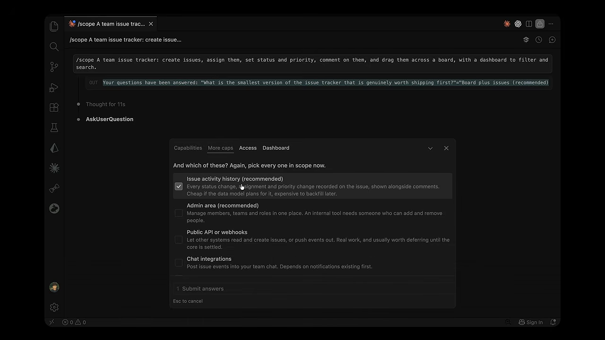
범위가 정해지면 만드는 방식을 고르게 해요. 다음 화면의 질문은 '기능을 어떻게 잘라서 어떤 순서로 만들까'예요. 네 가지 선택지가 나오고, 맨 위 Tracer Bullet에 추천 표시가 있어요.
화면에 적힌 네 방식을 우리말로 옮기면 이래요.
| 방식 | 어떻게 만드나요 | 화면이 말한 맞는 경우 |
|---|---|---|
| Tracer Bullet | 조각마다 DB(Database)부터 화면까지 끝까지 실제로 동작하게 만들어요 | 팀이 실제로 쓸 내부 도구 |
| Skateboard | 가장 얇은 '쓸 수 있는 전체'를 먼저 내고 키워요 | 핵심 흐름이 맞는지 아직 확신이 없을 때 |
| Journey | 단계마다 사용자 경로 하나를 처음부터 끝까지 완성해요 | 경험 자체가 제품일 때 |
| Facade | 가짜 데이터로 눌러 볼 수 있는 껍데기부터 만들고 뒤를 이어요 | 빠른 데모용, 프로토타입 수준 |
기술 스택은 일부러 안 건드려요
scope는 데이터베이스, 프레임워크, 라이브러리를 정하지 않아요. 아래 화면 왼쪽 'THE PLAN'에는 계정과 역할, 팀원 초대, 공유 라이브러리, 사용량 제한, 결제처럼 '무엇'만 있어요. 오른쪽 'DECIDED AFTER'에 Next.js, Postgres, Vercel 같은 '어떻게'가 따로 있어요.
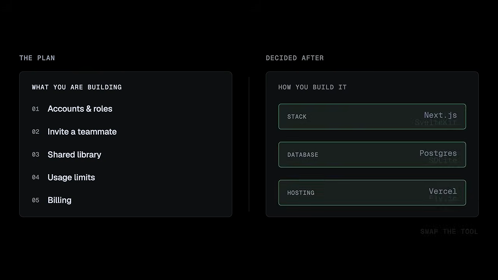
결국 scope는 막연한 아이디어를 순서가 있는 계획으로 바꿔요. AI가 급하게 짐작한 계획이 아니라, 사람이 직접 고른 계획이에요.
설계는 사람이, 모르면 멈춰요 — architect · develop
계획이 있다고 설계까지 된 건 아니에요. 시스템을 실제로 어떻게 지을지 정해야 해요. 화면의 물음표 네 개가 그 결정들이에요. 데이터베이스, 기술 스택, 핵심 로직, 그리고 확장 방식이에요.
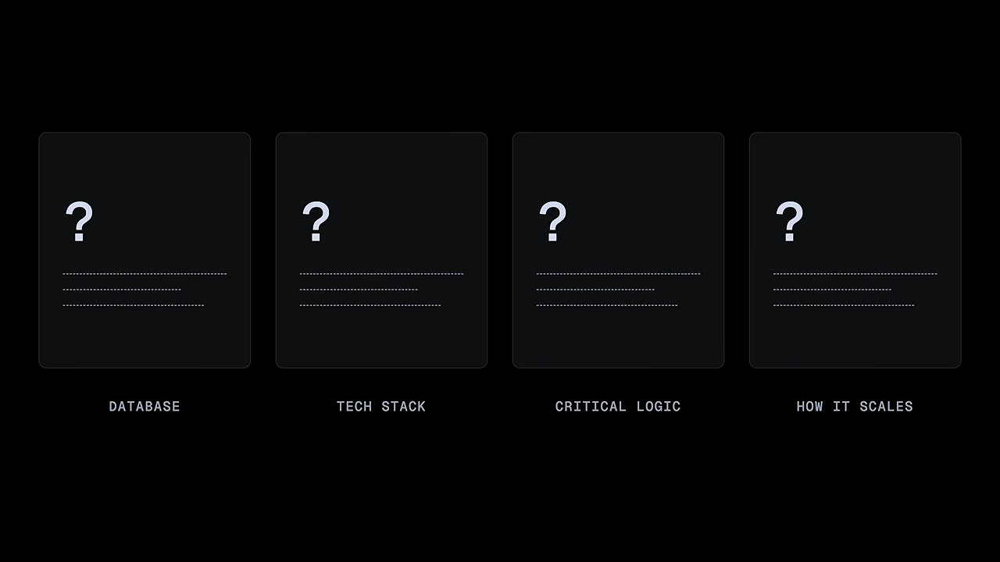
첫날부터 사용자가 백만 명일 리는 없어요. 그래도 거기까지 갈 수 있게 짓되, 아직 없는 규모를 위해 과하게 짓지는 않아야 해요. 화자는 이 균형이 진짜 엔지니어링 결정이라고 말해요. 문제는 AI가 이런 결정을 묻지 않는다는 거예요. 데이터를 어떻게 저장할지, 실패하면 어떻게 할지, 목록에 페이지네이션을 붙일지, 어떤 공급자를 쓸지를 '일단 돌아가게' 고르고 코드에 묻어 버려요. 그러면 사람은 결정을 내린 게 아니라 물려받게 되고, 그 결정이 부르는 고장도 함께 물려받아요.
architect가 기본으로 가진 의견
architect 스킬은 시니어 엔지니어가 할 설계 대화를 대신 진행해요. 먼저 패턴부터 생각해요. 정말 복잡해야 하는지, 지루하지만 믿을 만한 선택이 맞는지요. 그리고 좋은 엔지니어라면 이미 갖고 있을 기본 의견을 들고 와요.
- 모놀리식 구조로 시작해요.
- 데이터베이스는 기본적으로 관계형을 써요.
- 모든 목록에 페이지네이션을 붙여요.
- 공개 엔드포인트엔 모두 레이트 리밋을 걸어요.
- 비밀값은 절대 코드에 두지 않아요.
결정마다 추천안과 '정직한 대안'을 함께 놓고, 대안이 왜 졌는지까지 문서에 적어요. 코드 속에 묻히지 않으니 사람이 읽고 뒤집을 수 있어요.
모든 값에 출처를 달아요
진짜 안전장치는 그 밑에 있는 확인 하나예요. 기능이 보여 주거나 계산해야 하는 값마다 어디서 오는지 적어요. 아래 화면은 architect가 쓴 설계 문서의 Value sourcing 표예요. 가운데 열이 화면에 나오는 값이고, 오른쪽 Source 열이 그 값의 출처예요. 예를 들어 이슈 카드의 '2 days ago' 같은 생성 날짜는 어느 필드를 이어 붙여서 오는지, 칸의 이슈 개수는 저장하지 않고 화면을 그릴 때 센다는 것까지 적혀 있어요.
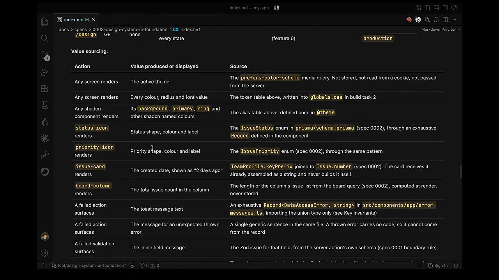
develop은 모르면 멈춰요
막상 구현에 들어가면 develop 스킬이 예상 밖의 행동을 해요. 구현을 멈춰요. 계속 짜려면 아무도 내리지 않은 결정 하나를 지어내야 했기 때문이에요.
화자가 영리하다고 꼽는 건 이걸 '느낌'으로 판단하지 않는다는 점이에요. AI는 진짜 결정을 '그냥 배선(just wiring)'이라고 스스로 납득하고 지나가기 쉬워요. 아래 화면이 그 장면이에요. 에이전트가 작업을 이어 가다 가운데 점선 칸(세션 만료 방식)을 그냥 배선으로 여기고 지나치면, 오른쪽 작업이 모두 분홍색, 즉 잘못된 가정 위에 쌓여요.
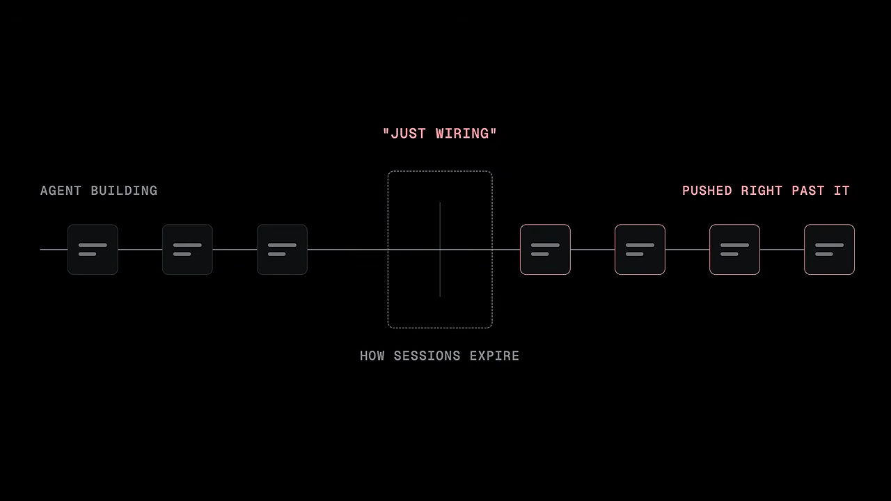
그래서 develop은 기계적으로 확인해요. 기능이 만들어야 하는 값을 모두 나열하고, 계획에서 각각의 출처를 찾아요. 출처가 없는 값이 있으면 그건 '빚진 결정'이에요. 거기서 멈추고 사람에게 돌려보내요. 흐름을 그리면 이래요.
flowchart TD
A["기능이 만들 값을 모두 나열"] --> B{"값마다 계획에 출처가 있나요?"}
B -- "모두 있어요" --> C["구현을 이어 가요"]
B -- "없는 값이 있어요" --> D["멈추고 사람에게 결정을 돌려보내요"]
D --> E["architect로 결정해요"]
D --> F["사람이 무시하고 진행시켜요"]
F --> G["가정을 파일에 적고 기능에 표시를 남겨요"]
E --> C
G --> C
사람은 언제든 이걸 무시하고 진행시킬 수 있어요. 결정권은 사람에게 있으니까요. 그 대신 가정이 파일에 적히고, 제대로 결정될 때까지 그 기능에 표시가 붙어 있어요. 화자는 이게 마법은 아니라고 인정해요. 어떤 프롬프트도 100%를 잡지는 못해요. 그래도 거의 다 잡고 나머지에 시니어의 판단을 보태는 것과, 모든 결정이 조용히 내려지는 것은 전혀 다른 세계라고 해요.
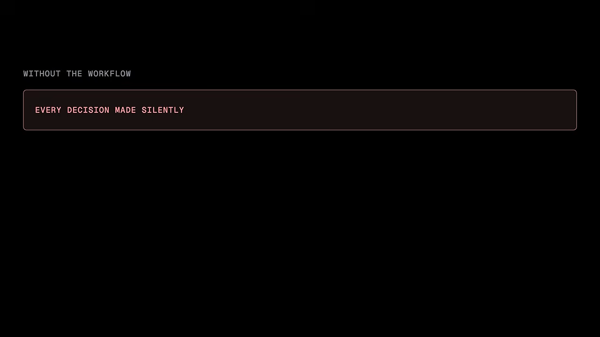
프로젝트 지식은 파일에 — audit · sync
결정을 제대로 내리며 만들고 있다 해도, 밤에 노트북을 덮으면 그 세션은 끝나요. 에이전트는 컨텍스트 파일로 프로젝트를 알아요. AGENTS.md든 CLAUDE.md든 도구마다 이름은 달라도, 스택과 명령어와 관례를 알려 주는 파일이에요. 이게 없으면 새 세션은 매번 눈을 가린 채 시작해서 추측하고, 추측은 매번 달라요. 그러다 코드가 세 가지 스타일로 갈라져요.
잘 만들기는 생각보다 번거로워요. 모노레포나 서비스가 나뉜 구조에서 큰 파일 하나에 다 넣으면, 세션마다 필요 없는 규칙까지 읽게 돼요. 맞는 맥락을 맞는 자리에, 가볍게 두는 게 목표예요.
audit가 실제 프로젝트를 읽고 써요
audit 스킬은 실제 프로젝트의 구조와 스택, 그리고 architect가 이미 내린 결정을 읽고 컨텍스트 파일을 써요. '이런 프로젝트라면 이렇겠지'라는 짐작이 아니라 실제로 있는 것에서 써요. 아래 화면 왼쪽처럼 단일 앱이면 깔끔한 AGENTS.md 하나를 두고, 오른쪽처럼 모노레포면 루트에는 '어디서나 참인 것'만 담은 가벼운 파일을 둬요.
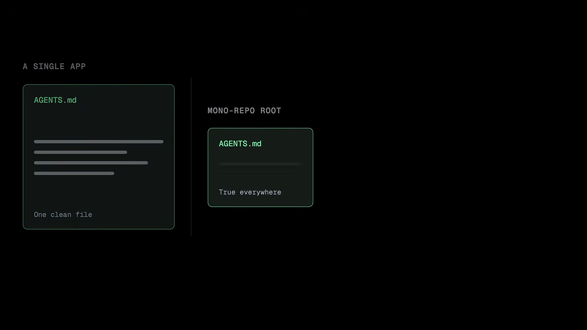
각 부분만의 규칙은 그 옆에 둬요. 영상은 web, api, worker 폴더마다 자기 AGENTS.md를 따로 둔 모습을 보여 줘요. 팀 저장소에서 써도 안전한 이유도 있어요. 사람이 직접 쓴 내용은 덮어쓰지 않아요. 아래 화면처럼 '배포는 일부러 수동으로 한다', '레거시 cron은 건드리지 않는다' 같은 줄에는 'YOURS · KEPT' 표시가 붙고 그대로 남아요.
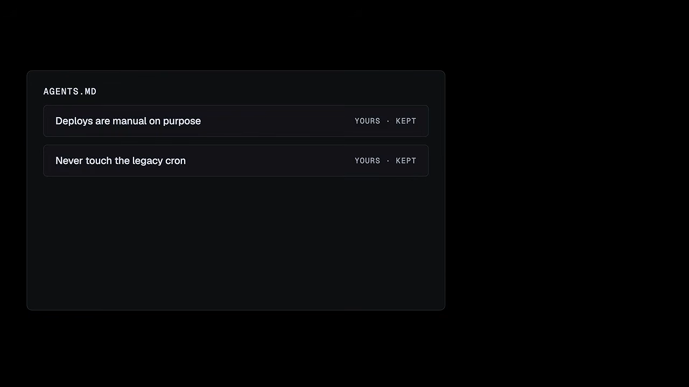
그리고 개발이 이어지는 동안 sync 스킬이 이 파일들을 저장소의 현재 모습과 맞춰요. 석 달 뒤에 읽는 맥락도 지금 앱을 설명하게 하는 거예요.
지식이 채팅이 아니라 파일에 살아요
이렇게 하면 프로젝트 지식이 창을 닫으면 사라지는 채팅에 있지 않고 파일에 있어요. 아래 화면처럼 새 세션, 동료, 완전히 다른 AI 도구가 모두 같은 AGENTS.md를 읽고 이어서 일해요. 아무도 AI에게 프로젝트를 다시 설명하지 않아도 돼요.
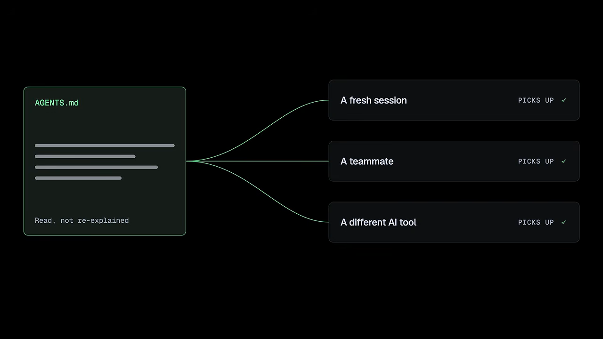
남이 짠 오래된 코드에서
여기까지는 모두 새 프로젝트에서 시작했어요. 화자도 자기 튜토리얼을 포함해 대부분의 AI 코딩 강의가 새 프로젝트로 시작한다고 인정해요. 백지라서 싸울 게 없고 배우기 쉬우니까요. 하지만 실제 평일 저녁에 마주하는 코드는 달라요. 아래 화면 오른쪽이 그 모습이에요. 1,284개 파일에 6년 된 코드이고, 남이 썼고, 문서는 낡았고, 관례는 적혀 있지 않고, 배운 스택도 아니에요.
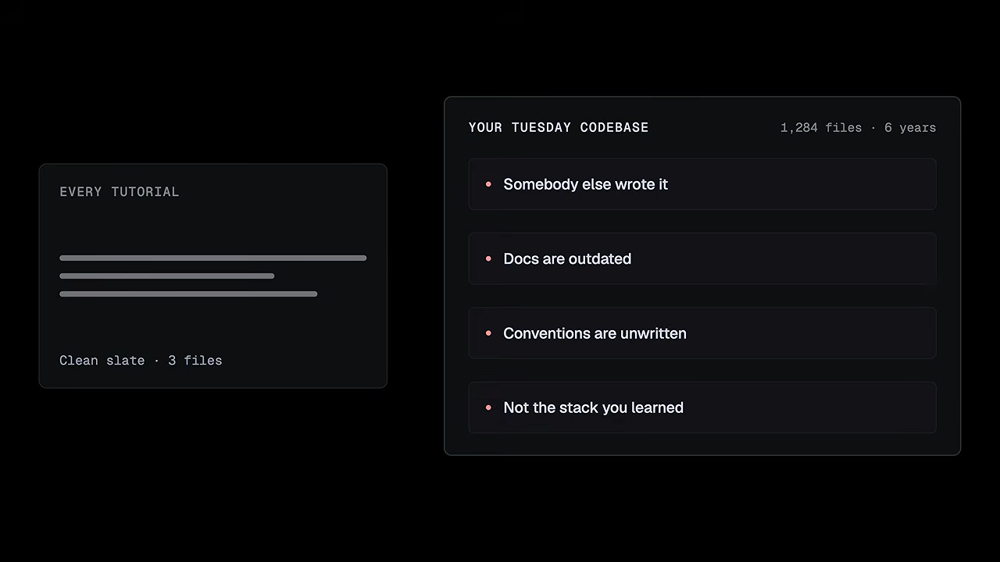
그래서 질문이 바뀌어요. AI가 이 코드를 읽을 수 있느냐는 당연히 그렇다고 해요. 진짜 질문은 엔지니어링 흐름 전체가 물려받은 엉망인 코드 위에서도 돌아가느냐예요.
audit가 두 번째로 쓸모 있는 자리
같은 audit 스킬을 기존 프로젝트에 돌리면, 새로 세팅하는 대신 실제로 어떻게 돌아가는지 읽고 적어요. 흐름 전체가 남이 시작한 코드에 들어가는 입구가 이거예요. 아래 화면은 auth-server라는 기존 저장소에 /audit를 돌린 결과예요. 왼쪽 파일 목록에 새로 생긴 AGENTS.md와 CLAUDE.md가 U(추적 안 됨) 표시로 보이고, 오른쪽엔 루트 파일을 목표 길이로 줄인 뒤 'audit complete · whole-repo'가 떠 있어요.
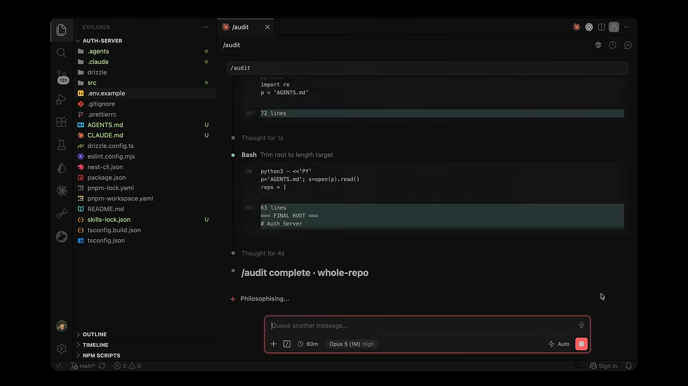
AGENTS.md를 72줄에서 63줄로 줄였어요. 섹션 4에서 말한 '가볍게'를 지키는 장면이에요.
영상 13:13에서 보기화자는 이 방식이 언어를 가리지 않는다고 강조해요. 자바스크립트가 하나도 없는 15년 된 PHP(PHP: Hypertext Preprocessor) 코드에 돌려도 똑같이 읽고 문서로 남긴다고 말해요. 담는 건 프레임워크가 아니라 엔지니어링 맥락이라서요. 다만 화면에서 실제로 보여 준 데모는 PHP가 아니라 NestJS·Drizzle·Postgres로 된 인증 서버였어요. PHP 사례는 말로만 나와요.
나머지 흐름이 기존 코드에 맞춰 휘어요
중요한 건 그다음이에요. 프로젝트를 파악하고 나면 나머지 흐름이 거기에 맞춰져요. scope는 프로젝트가 오늘 시작하는 척하지 않아요. 아래 화면에서 /scope는 먼저 코드가 이미 주는 것을 정리해요. 이메일 인증 가입, DB에 저장하는 세션 쿠키 로그인, 비밀번호 재설정, 역할별 접근 제한이 있고, 테스트는 아직 하나도 없다고 적어요. 그다음 'Who calls this API?'라고 물어요.
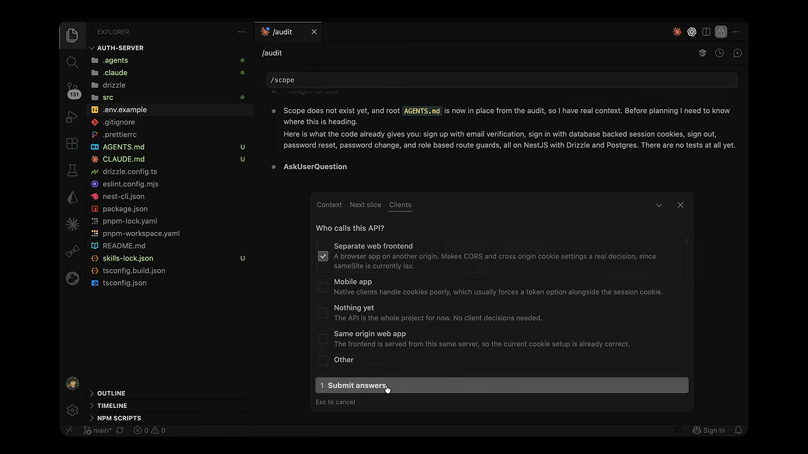
새 기능을 설계할 때도 진공 상태가 아니라 기존 시스템의 제약, 즉 이미 있는 데이터와 따르는 패턴 안에서 해요. 코드와 싸우지 않고 함께 일하는 것, 다시 만들지 않고 다시 쓰는 것이 핵심이에요. 아래 화면처럼 계획, 결정, 구현이 모두 남이 쓴 코드 위에 얹혀요. 언어가 무엇이든요.
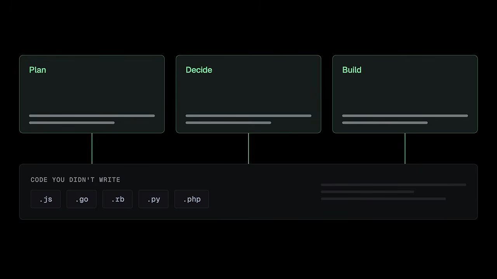
화자는 물려받은 엉망인 코드를 깨뜨리지 않고 앞으로 나아가게 하는 일이 개발자가 경력 대부분을 쓰는 일인데, 이걸 가르치는 곳은 거의 없다고 말해요.
'다 됐어요'를 믿지 않아요 — check · test · document
기능을 다 만들었고 AI가 끝났다고 말해요. 화자는 여기가 AI가 거짓말하는 마지막 지점이라고 해요. 끝났다는데 버튼이 아무 일도 안 하거나, 예외 상황에서 터지거나, 계획에 있던 화면이 아예 없을 때가 있어요.
더 나쁜 함정은 테스트가 초록색이라는 거예요. 아래 화면 왼쪽엔 formatDate(), mapUser(), slugify() 테스트 3개가 통과해 있어요. 오른쪽 'NEVER TESTED'에는 '기능이 존재하나요?', '화면이 있기는 한가요?', '계획대로 만들어졌나요?'가 비어 있어요.
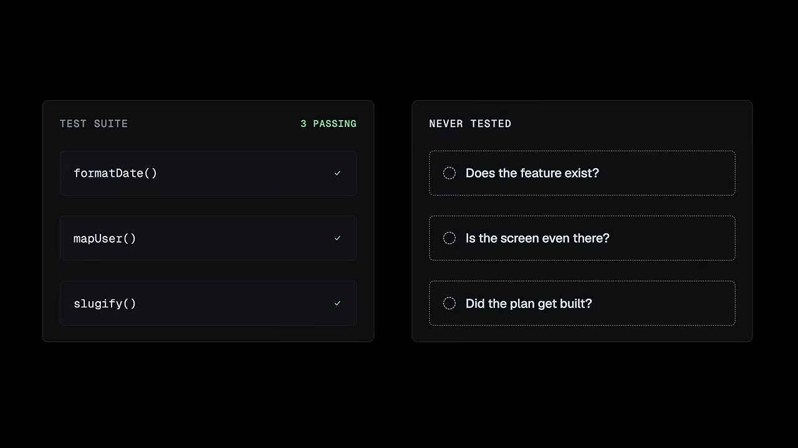
네 가지 일을 일부러 나눠요
그래서 이 흐름은 '돌아가요'를 답으로 받지 않아요. 화면 위쪽 "It works"에 줄이 그어져 있고, 그 아래로 네 가지 일이 갈라져요. 네 일을 일부러 따로 둬요.
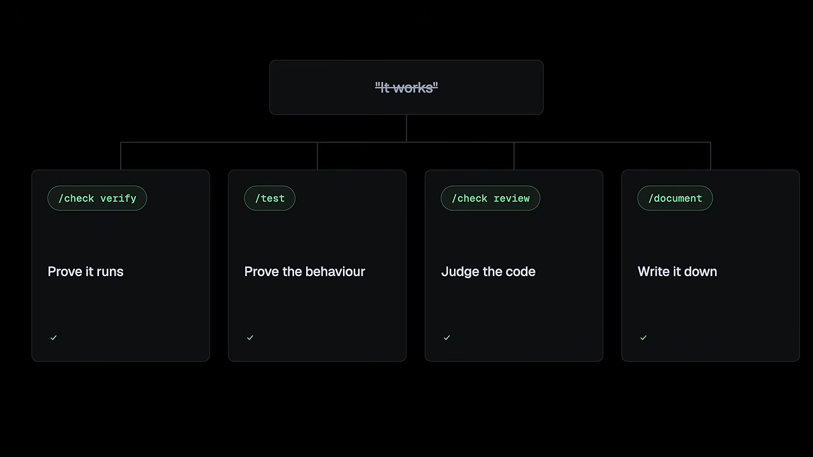
| 스킬 | 하는 일 | 왜 따로 두나요 |
|---|---|---|
/check verify | 실제 앱을 띄워 흐름을 누르고 엔드포인트를 호출해요. 계획의 기준과 약속한 화면을 하나씩 맞춰 봐요 | '테스트 통과'와 '눈으로 돌아가는 걸 봤다'는 달라요 |
/test | 호출하는 쪽이 기대는 동작과 진짜로 깨질 만한 곳에 테스트를 써요 | 여섯 달 뒤 근처를 고칠 때 이 기능을 지켜 줘요 |
/check review | 코드를 쓴 모델과 다른 모델로 diff를 읽고 문제를 순위 매겨요 | 자기 작업을 리뷰하는 모델은 자기 맹점을 그대로 가져요 |
/document | PR(Pull Request) 설명과 변경 기록을 실제 diff에서 써요 | AI가 '바꿨다고 기억하는 것'이 아니라 실제로 바뀐 것을 남겨요 |
위험에 맞춰 골라 써요
스킬 네 개가 많아 보일 수 있어요. 얼마나 돌릴지는 사람과 프로젝트가 정해요. 아래 화면 왼쪽처럼 버릴 프로토타입은 /check verify로 자체 확인만 하고, 오른쪽 결제 시스템은 넷을 매번 다 돌려요.
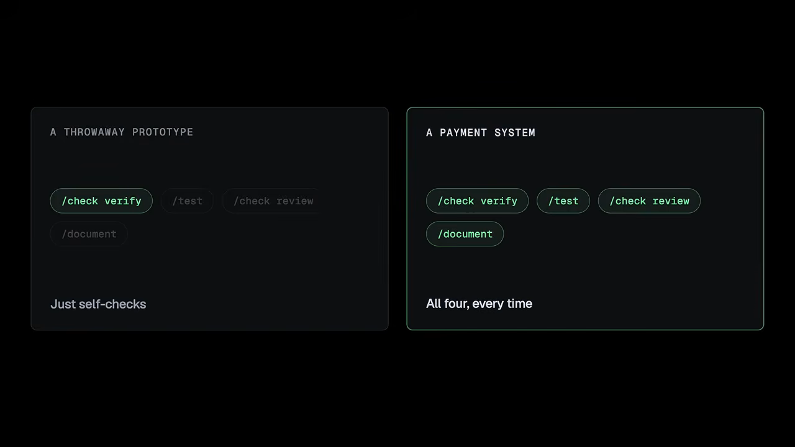
어느 쪽이든 원칙은 같아요. 브라우저에 뜬다고 끝난 게 아니에요. 화려하지 않아서 가장 자주 건너뛰는 단계지만, 방금 넣은 기능이 정말 돌아가는지, 그 전에 만든 세 기능을 조용히 깨뜨리지 않았는지를 가르는 단계예요.
디버깅, 그리고 전체 흐름
검증을 해도 언젠가는 뭔가 빠져나가요. 그때 AI에게 고치라고 하면 흔히 이런 일이 생겨요. 아래 화면 왼쪽처럼 한 군데 바꾸고, 세 군데 더 바꾸고, 도우미 함수 이름을 바꾸고, 되돌렸다 다시 고치고, 증상만 덮어요. 매번 '여전히 깨짐'이에요. 오른쪽은 20분 뒤의 결과예요. 무작위 수정 5개, 손도 안 댄 원래 버그 1개, 새로 생긴 버그 2개요.
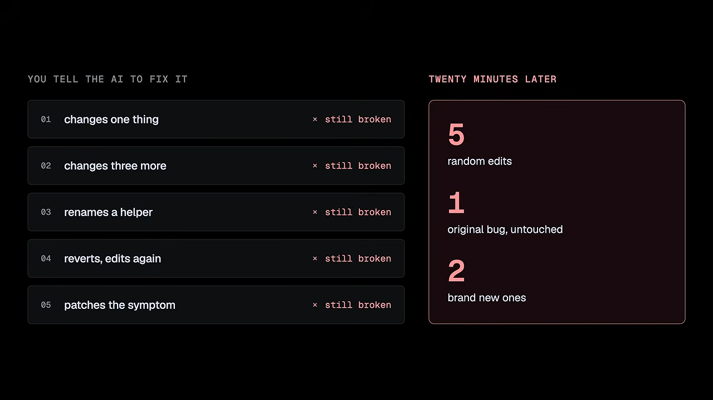
debug는 추측하지 않고 조사해요
debug 스킬은 실제 엔지니어가 디버깅하는 순서를 따라요. 영상이 말한 순서를 그대로 그리면 이래요.
flowchart TD
A["버그를 확실히 재현해요"] --> B["실패하는 가장 작은 지점으로 좁혀요"]
B --> C["근본 원인 가설을 딱 하나 세워요"]
C --> D{"그 하나만 확인해 보면?"}
D -- "틀렸어요" --> E["그 수정을 버리고 배운 걸 반영해요"]
E --> C
D -- "맞았어요" --> F["증상이 아니라 원인을 고쳐요"]
F --> G["수정 전엔 실패, 후엔 통과하는 테스트"]
G --> H["같은 실수가 다른 곳에도 있는지 찾아요"]
D -- "코드가 아니라 설계 결정이 문제예요" --> I["그렇다고 말하고 다시 설계하게 돌려보내요"]
재현부터 하는 이유는 단순해요. 마음대로 재현할 수 없는 버그는 고쳤다고 증명할 수도 없거든요. 가설이 틀리면 그 변경을 버려서, 쓸모없는 수정이 남아 코드를 더 어지럽히지 않게 해요. 원인을 고친다는 것도 구체적이에요. null 값을 막아서 오류만 사라지게 하지 않고, 애초에 왜 null이었는지를 찾아요.
고친 뒤엔 수정이 없으면 실패하고 있으면 통과하는 테스트, 곧 회귀 테스트를 써서 같은 버그가 조용히 돌아오지 못하게 해요. 화자가 '성숙하다'고 꼽는 부분도 있어요. 버그가 코딩 실수가 아니라 나쁜 결정에서 왔다면, 패치로 덮지 않고 그렇다고 말한 뒤 다시 설계하게 돌려보내요.
아래 화면이 실제 /debug 결과 보고예요. 근본 원인 세 개를 찾아 고쳤어요. 테스트에 닿기도 전에 CI(Continuous Integration)가 빨간불이던 원인, 권한 실패에 오류 코드가 없던 문제, 카드를 옮길 때 잠금을 엉뚱한 대상에 걸던 문제예요. 맨 아래 'Heads up, same root cause nearby'에는 같은 원인이 updateIssue에도 있다고 적혀 있어요. 확인하지 못한 부분은 'Not verified, and you should know'로 따로 밝혀요.
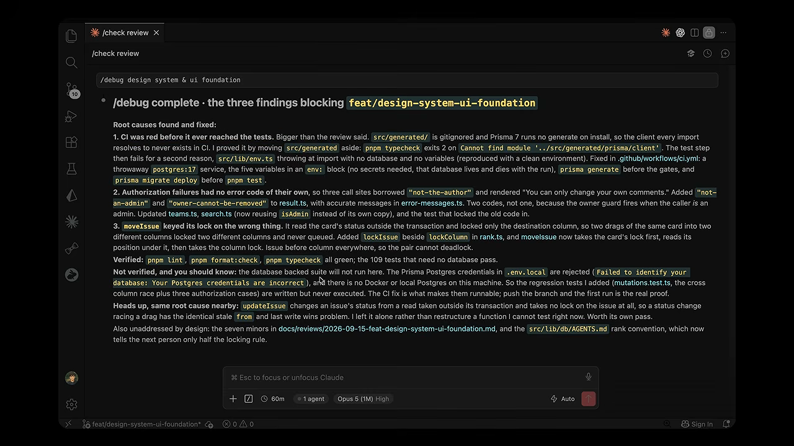
고정된 절차가 아니에요
화자는 이 모든 게 매번 같은 단계를 밟는 딱딱한 절차가 아니라고 강조해요. 작은 앱과 거대한 코드베이스, 새 프로젝트와 몇 년 된 프로젝트는 필요한 흐름이 달라요. 아래 화면 왼쪽처럼 지금 만드는 것의 크기(1,284개 파일), 나이(6년), 가는 방향(프로덕션)을 보고, 오른쪽처럼 거기에 맞는 단계를 골라 줘요.
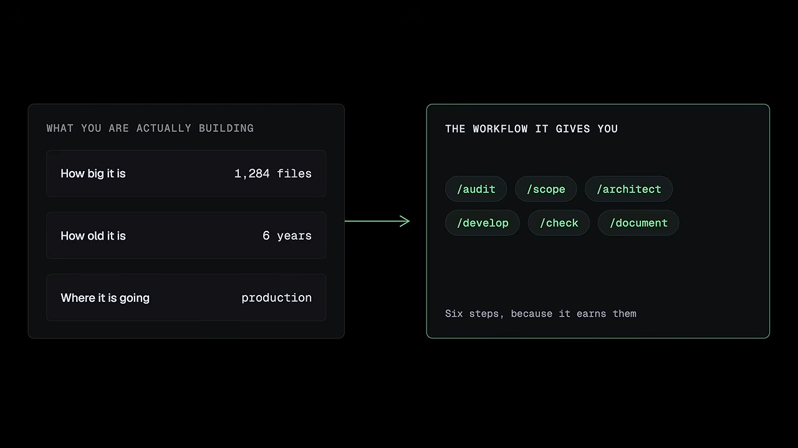
화자는 이게 프롬프트 묶음과 엔지니어링 시스템의 차이라고 말해요. 그리고 전체를 여섯 줄로 정리해요. 아래 화면의 카드 여섯 장이 그 정리예요.
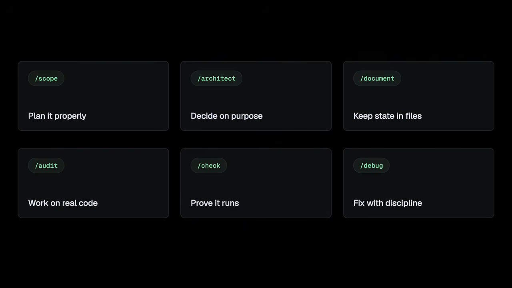
이 흐름이라야 기능이 쌓일수록 썩지 않고 복리처럼 불어난다는 게 결론이에요. 화자는 영상의 스킬을 모두 오픈소스로 무료 공개했다고 말하고, 저장소 화면을 보여 줘요. 제목은 Engineering Workflow Skills예요.
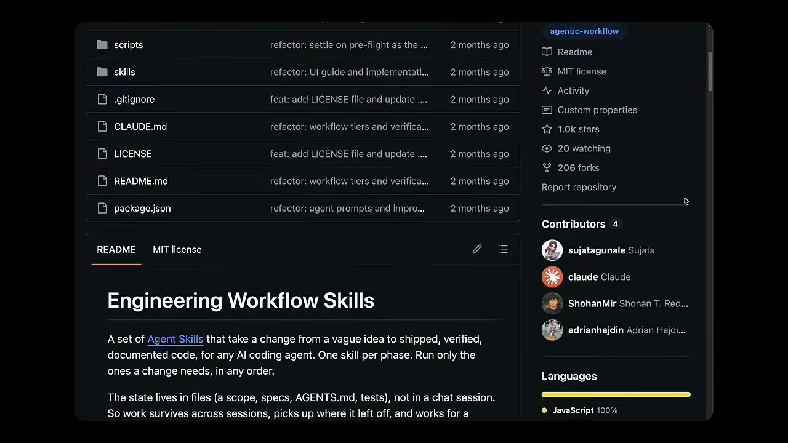
영상은 마지막으로 교훈 네 개를 남겨요. AI에게 프롬프트를 던지는 사람과 AI로 엔지니어링하는 사람의 차이는 더 좋은 모델이나 더 똑똑한 프롬프트가 아니라는 거예요.
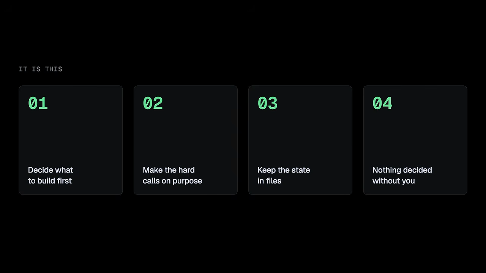
never ever let the AI decide something important without telling you.
AI가 중요한 걸 말없이 결정하게 절대 두지 마세요.
— 영상 22:55